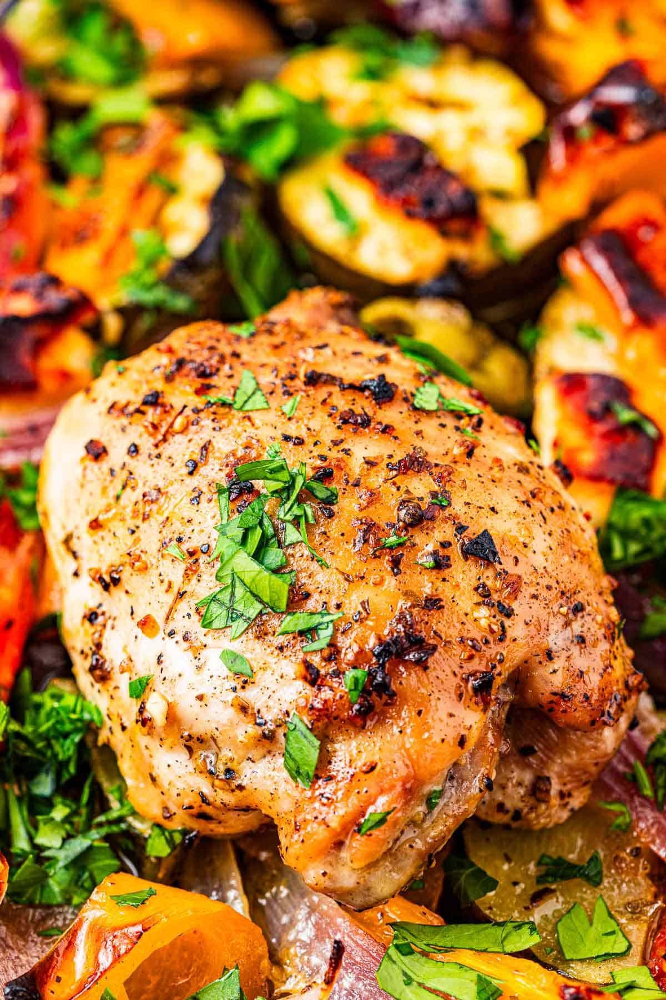

Greek Sheet-Pan Chicken

Juicy chicken thighs roasted on a single pan with summer vegetables, olives, and feta in a bright lemon-oregano ladolemono dressing
¼ cupfresh lemon juice (juice of 2 large lemons)1 to 2 tspdried oregano1large garlic clove, minced¾ tspkosher salt¾ tspblack pepper¾ cupextra virgin olive oil1large red onion, halved and sliced into ½-inch pieces1medium zucchini, halved and sliced into ½-inch half moons1large orange bell pepper, cored and sliced into ½-inch slices1large tomato, cut into 8 wedges- kosher salt
- ground black pepper
6 to 8boneless skinless chicken thighs¼ cuppitted Kalamata olives¼ cuppitted Castelvetrano olives4 ozfeta cheese, cut into chunks¼ cupchopped Italian parsley, for garnish
Position a rack in the middle of your oven and heat it to 425°F.
Make the ladolemono Greek dressing. In a medium mixing bowl, add the lemon juice, oregano, garlic, salt, and pepper and whisk vigorously to combine. While whisking, drizzle in the olive oil and continue whisking until emulsified.
Coat the veggies. On a large sheet pan, spread the onions, zucchini, bell pepper, and tomatoes. Season well with salt and pepper, then pour about ¼ cup of the sauce all over the veggies. Toss to coat, then spread the vegetables out so they are all touching the surface of the pan.
Add the remaining ingredients. Season the chicken on both sides with salt and pepper. Nestle the chicken, olives, and chunks of feta in between the vegetables and drizzle with the remaining ladolemono sauce, making sure the chicken especially is covered with the sauce.
Bake on the center rack until the chicken is cooked through, about 35 minutes. For more color, transfer the chicken to the top rack about 6 inches away from the broiler. Broil for a couple of minutes, watching closely so the chicken and vegetables gain some color but do not burn.
Remove from the oven and spoon the pan juices all over the chicken. Garnish with the parsley and serve.